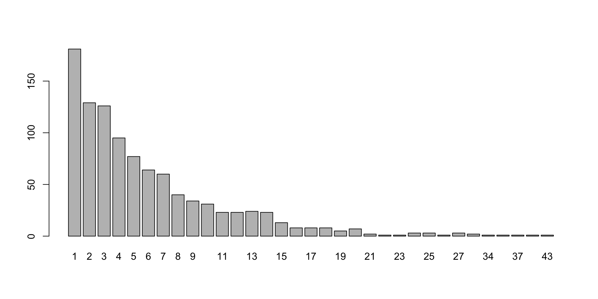

[1] "Luka Doncic"Data: rolling a dice
Recall, you can directly print out the contents of an R object by running it
[1] "Luka Doncic"But in loop and conditional structures (more on this soon), this doesn’t work
Instead, a print( ) or cat( ) function is needed (both functions are used to output information, but they behave slightly differently; print will print out an R object and cat will concatenate an R object into text):
Luka DoncicShai Gilgeous-Alexander[1] "Luka Doncic"
[1] "Shai Gilgeous-Alexander"You can also paste texts together:
[1] "The average age is 26.3080168776371 years old"[1] "The average age is26.3080168776371years old"The average age is 26.30802 years oldpaste and cat behave differently for vectors; also note R’s behavior of recycling the shorter vector when needed:
dog cat 1 2 3 4 5[1] "dog 1" "cat 2" "dog 3" "cat 4" "dog 5"FOR loops allow you to repeatedly run the same chunk of code for a FIXED number of times.
What will be printed if I run the following FOR loops?
[1] 5
[1] 6
[1] 7
[1] 8
[1] 9
[1] 10[1] 11
[1] 12
[1] 13[1] 50
[1] 50
[1] 50Try:
Exercise: use a FOR loop to print: “1+1=2”, “2+2=4”, …, “10+10=20”
[1] "1 + 1 = 2"
[1] "2 + 2 = 4"
[1] "3 + 3 = 6"
[1] "4 + 4 = 8"
[1] "5 + 5 = 10"
[1] "6 + 6 = 12"
[1] "7 + 7 = 14"
[1] "8 + 8 = 16"
[1] "9 + 9 = 18"
[1] "10 + 10 = 20"Important note: as you can see in the previous example, the R object result needs to be initialized first. There are two ways to do this:
sample(c(1:6), size=1); try it for a couple of times.IF condition allows you to run a chunk of code only when a certain condition is true.
CONDITION should be something that returns T/F (can be a single or a composite logical statement)
[1] "the value of x is 0"
[1] "the value of x is 1"
[1] "1/x = 1"
[1] "the value of x is 2"
[1] "1/x = 0.5"
[1] "the value of x is 3"
[1] "1/x = 0.333333333333333"
[1] "the value of x is 4"
[1] "1/x = 0.25"[1] "the value of x is 0"
[1] "the value of x is 1"
[1] "1/x = 1"
[1] "the value of x is 2"
[1] "1/x = 0.5"
[1] "the value of x is 3"
[1] "1/x = 0.333333333333333"
[1] "the value of x is 4"
[1] "1/x = 0.25"[1] "the value of x is -5"
[1] "x is negative"
[1] "the value of x is -4"
[1] "x is negative"
[1] "the value of x is -3"
[1] "x is negative"
[1] "the value of x is -2"
[1] "x is negative"
[1] "the value of x is -1"
[1] "x is negative"
[1] "the value of x is 0"
[1] "x is 0"
[1] "the value of x is 1"
[1] "x is positive"
[1] "the value of x is 2"
[1] "x is positive"
[1] "the value of x is 3"
[1] "x is positive"You can add else to an if statement. This is especially useful if you only have two options.
For example, let’s simulate the following game for 10 times: you roll a fair dice; if it lands 6, you win $20; else you lose $5.
[1] "2 -5"
[1] "3 -10"
[1] "5 -15"
[1] "2 -20"
[1] "6 0"
[1] "4 -5"
[1] "2 -10"
[1] "6 10"
[1] "1 5"
[1] "5 0"If you have more than two options, you can use multiple if statements, or you can use else if. Be careful about the differences in the following two scenarios:
[1] "a is greater than 10"[1] "a is greater than 5"[1] "a is positive"[1] "a is greater than 10"In (A): only the LAST TWO conditions are linked together
In (B): all of the conditions are linked together and only one will run
Suppose you roll a dice; if you get a 6, you win; else you lose. Simulate this game for 10 times and print out whether you win or lose each time.
[1] "You win with roll 6"
[1] "You lose with roll 5"
[1] "You lose with roll 5"
[1] "You lose with roll 3"
[1] "You win with roll 6"
[1] "You lose with roll 1"
[1] "You lose with roll 2"
[1] "You lose with roll 2"
[1] "You win with roll 6"
[1] "You lose with roll 4"WHILE loops allow you to run code repeatedly, as long as the condition is satisfied
Suppose you want to keep playing a game until you win $10. What are some issues with this general coding structure?
What will the following examples print? One of them will return an error and one of them will run forever!
This will return an error since the R object i was not created.
This will run for ever since j <= 5 is always true.
This will print 2, 3, 4, 5, 6.
This will print 1, 2, 3, 4, 5.
Summary: every WHILE loop should have (1) an initialization and (2) an updating step.
Generate the Fibonacci sequence: 1, 1, 2, 3, 5, 8, 13, 21, etc.
Write a loop to generate the first \(20\) numbers. Make sure to save the resulting sequence in a vector.
Write a loop to keep generating this sequence, until the last number exceeds 20,000. Make sure to save the resulting sequence in a vector.
[1] 1 1 2 3 5 8 13 21 34 55 89 144 233 377 610
[16] 987 1597 2584 4181 6765 [1] 1 1 2 3 5 8 13 21 34 55 89 144
[13] 233 377 610 987 1597 2584 4181 6765 10946 17711 28657BREAK allows you to break out of any loop
[1] 1
[1] 2
[1] 3
[1] 4
[1] 5It is a good idea to add a safety counter to WHILE loops
[1] 1
[1] 1
[1] 1
[1] 1
[1] 1counter=1 # --- counter --- #
fseq <- numeric() #initialization
fseq[1]=1; fseq[2]=1
i=3
while(max(fseq)<=20000){
fseq[i]=sum(fseq[c(i-1,i-2)])
i=i+1 # update
# --- counter ---#
counter = counter + 1
if(counter > 5){
print('Caution: maximum iteration reached in while loop')
break
}
# --- counter ---#
}[1] "Caution: maximum iteration reached in while loop"[1] 1 1 2 3 5 8 13The function sample( ) allows you to randomly sample value(s) from a vector
[1] 76 70 65[1] "dog" "cat" "chicken" [1] "T" "H" "T" "T" "H" "H" "T" "T" "H" "H" [1] "T" "H" "T" "H" "T" "H" "T" "T" "H" "H"Suppose you roll two fair dice and look at the sum of the two dice. If the sum is 10 or larger, you win the game.
[1] "Trial #1: rolled 1 & 1; sum is 2"
[1] "Trial #2: rolled 2 & 1; sum is 3"
[1] "Trial #3: rolled 4 & 3; sum is 7"
[1] "Trial #4: rolled 4 & 3; sum is 7"
[1] "Trial #5: rolled 5 & 4; sum is 9"
[1] "Trial #6: rolled 5 & 2; sum is 7"
[1] "Trial #7: rolled 5 & 2; sum is 7"
[1] "Trial #8: rolled 3 & 4; sum is 7"
[1] "Trial #9: rolled 5 & 5; sum is 10"
[1] "Trial #10: rolled 2 & 2; sum is 4"
[1] "Trial #11: rolled 5 & 1; sum is 6"
[1] "Trial #12: rolled 6 & 5; sum is 11"
[1] "Trial #13: rolled 1 & 6; sum is 7"
[1] "Trial #14: rolled 2 & 1; sum is 3"
[1] "Trial #15: rolled 4 & 6; sum is 10"
[1] "Trial #16: rolled 2 & 2; sum is 4"
[1] "Trial #17: rolled 6 & 6; sum is 12"
[1] "Trial #18: rolled 4 & 2; sum is 6"
[1] "Trial #19: rolled 6 & 6; sum is 12"
[1] "Trial #20: rolled 5 & 3; sum is 8"[1] "Trial #1: rolled 1 & 4; sum is 5"
[1] "Trial #2: rolled 1 & 2; sum is 3"
[1] "Trial #3: rolled 5 & 3; sum is 8"
[1] "Trial #4: rolled 6 & 2; sum is 8"
[1] "Trial #5: rolled 3 & 3; sum is 6"
[1] "Trial #6: rolled 1 & 5; sum is 6"
[1] "Trial #7: rolled 5 & 2; sum is 7"
[1] "Trial #8: rolled 6 & 6; sum is 12"To just print out the outcome 20 times (result is not saved):
[1] "Trial #1: rolled 2 & 1; sum is 3"
[1] "Trial #2: rolled 5 & 5; sum is 10"
[1] "Trial #3: rolled 1 & 1; sum is 2"
[1] "Trial #4: rolled 6 & 5; sum is 11"
[1] "Trial #5: rolled 5 & 2; sum is 7"
[1] "Trial #6: rolled 2 & 6; sum is 8"
[1] "Trial #7: rolled 1 & 4; sum is 5"
[1] "Trial #8: rolled 1 & 4; sum is 5"
[1] "Trial #9: rolled 3 & 6; sum is 9"
[1] "Trial #10: rolled 2 & 2; sum is 4"
[1] "Trial #11: rolled 6 & 4; sum is 10"
[1] "Trial #12: rolled 4 & 4; sum is 8"
[1] "Trial #13: rolled 2 & 4; sum is 6"
[1] "Trial #14: rolled 1 & 6; sum is 7"
[1] "Trial #15: rolled 1 & 4; sum is 5"
[1] "Trial #16: rolled 1 & 6; sum is 7"
[1] "Trial #17: rolled 2 & 3; sum is 5"
[1] "Trial #18: rolled 2 & 6; sum is 8"
[1] "Trial #19: rolled 6 & 2; sum is 8"
[1] "Trial #20: rolled 5 & 2; sum is 7"To estimate the probability that the sum is 10 or larger, you can look at the proportion of sums that are 10 or larger. You would also want to increase the number of simulations.
result
2 3 4 5 6 7 8 9 10 11 12
299 546 822 1078 1413 1655 1415 1086 850 561 275 [1] 0.1686Outcome until the sum is 10 or larger (the set.seed function sets a random seed, which makes the result reproducible):
counter <- 0 ####counter
#set.seed(1)
rollsum <- 1
while(rollsum < 10){
rolls <- sample(c(1:6),size=2,replace=T)
rollsum <- sum(rolls)
counter <- counter + 1 ####counter
if(counter > 1000){
print('Caution: maximum iteration reached in while loop')
break
} ####counter
print(paste0('Trial #',counter,
': rolled ', paste(rolls,collapse=' & '),
'; sum is ',rollsum))
}[1] "Trial #1: rolled 5 & 6; sum is 11"Similarly, to estimate the game length that it takes to get a sum that is 10 or larger, you have to repeat this code for a large number of times and record the game length each time.
result <- rep(NA, 1000)
for(i in 1:length(result)){
counter <- 0 ####counter
rollsum <- 1
while(rollsum < 10){
rolls <- sample(c(1:6),size=2,replace=T)
rollsum <- sum(rolls)
counter <- counter + 1 ####counter
if(counter > 1000){
print('Caution: maximum iteration reached in while loop')
break
} ####counter
}
result[i] <- counter
}
table(result)result
1 2 3 4 5 6 7 8 9 10 11 12 13 14 15 16 17 18 19 20
181 129 126 95 77 64 60 40 34 31 23 23 24 23 13 8 8 8 5 7
21 22 23 24 25 26 27 32 34 35 37 39 43
2 1 1 3 3 1 3 2 1 1 1 1 1 